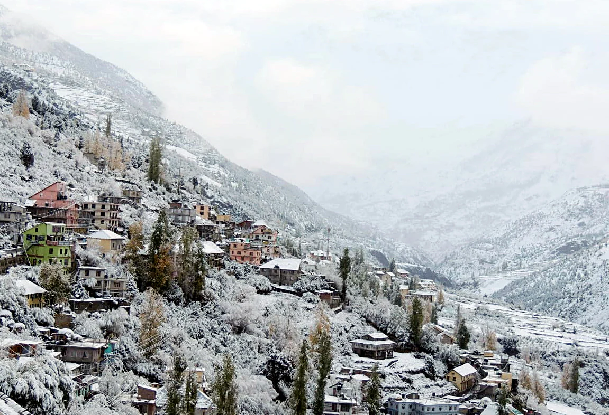
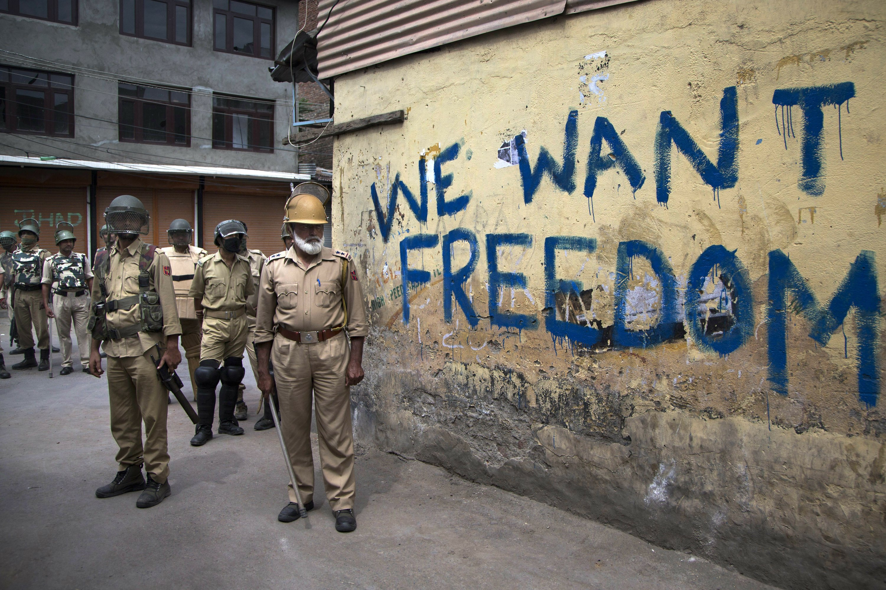
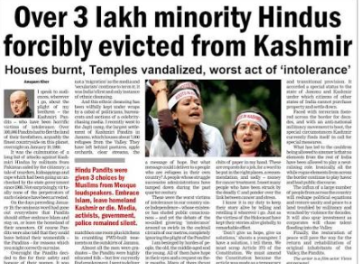
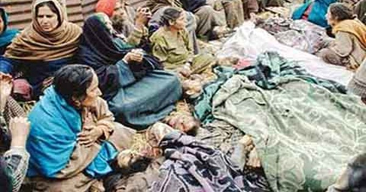
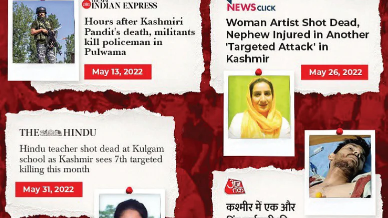

|  | The weather in Kashmir tends to be very cold. The temperature ranges between 6°C and 32°C, however. Snowfall is also fairly common during the coldest months. |  | In Kashmir, Muslims and Pakasistanis are protesting anti-India. They want Kashmir as Pakistani land. |  | Kashmiri Pandits (Hindus) are being involuntarily evicted out of Kashmir and their homes. In fact, in 1990, during the mass exodus, 75,343 Kashmiri Pandits were forced to flee Kashmir. In addition, many Hindu Kashmiris were killed by the large Muslim population. |  | Hindu Kashmiris were threatened and were put under cruel conditions if they didn't co-operate with the Muslim Kashmiris. |  |